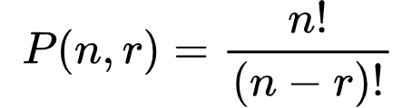

Permutasi adalah penyusunan suatu kelompok objek dengan memperhatikan
urutan. Dalam permutasi, perubahan urutan akan menghasilkan susunan yang
berbeda.
Contoh: Jika terdapat tiga huruf: A, B, dan C, maka susunan yang dapat
dibentuk berupa ABC, ACB, BAC, BCA, CAB, CBA.
Rumus
Untuk menghitung banyaknya susunan berbeda dari n objek yang dipilih
sebanyak r objek, digunakan rumus:

Di mana n! (n faktorial) adalah hasil perkalian semua bilangan dari n
hingga 1: